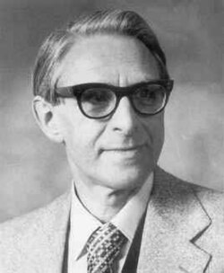
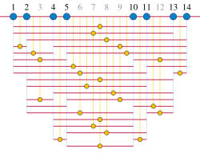
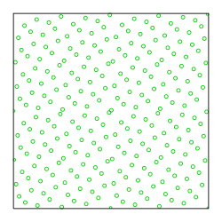
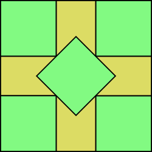

Klaus Roth | |
|---|---|
 | |
| Born | Klaus Friedrich Roth 29 October 1925 |
| Died | 10 November 2015 (aged 90) Inverness, Scotland |
| Education | |
| Known for | |
| Awards |
|
| Scientific career | |
| Fields | Mathematics |
| Institutions | |
| Thesis | Proof that almost all Positive Integers are Sums of a Square, a Positive Cube and a Fourth Power (1950) |
| Theodor Estermann | |
Other academic advisors | |
{kind=link}
Klaus Friedrich Roth FRS (29 October 1925 – 10 November 2015) was a German-born British mathematician who won the Fields Medal for proving Roth's theorem on the Diophantine approximation of algebraic numbers. He was also a winner of the De Morgan Medal and the Sylvester Medal, and a Fellow of the Royal Society.
Roth moved to England as a child in 1933 to escape the Nazis, and was educated at the University of Cambridge and University College London, finishing his doctorate in 1950. He taught at University College London until 1966, when he took a chair at Imperial College London. He retired in 1988.
Beyond his work on Diophantine approximation, Roth made major contributions to the theory of progression-free sets in arithmetic combinatorics and to the theory of irregularities of distribution. He was also known for his research on sums of powers, on the large sieve, on the Heilbronn triangle problem, and on square packing in a square. He was a coauthor of the book Sequences on integer sequences.
Biography
Early life
Roth was born to a Jewish family in Breslau, Prussia, on 29 October 1925. His parents settled with him in London to escape Nazi persecution in 1933, and he was raised and educated in the UK.[1][2] His father, a solicitor, had been exposed to poison gas during World War I and died while Roth was still young. Roth became a pupil at St Paul's School, London from 1939 to 1943, and with the rest of the school he was evacuated from London to Easthampstead Park during the Blitz. At school, he was known for his ability in both chess and mathematics. He tried to join the Air Training Corps, but was blocked for some years for being German and then after that for lacking the coordination needed for a pilot.[2]
Mathematical education
Roth read mathematics at Peterhouse, Cambridge, and played first board for the Cambridge chess team,[2] finishing in 1945.[3] Despite his skill in mathematics, he achieved only third-class honours on the Mathematical Tripos, because of his poor test-taking ability. His Cambridge tutor, John Charles Burkill, was not supportive of Roth continuing in mathematics, recommending instead that he take "some commercial job with a statistical bias".[2] Instead, he briefly became a schoolteacher at Gordonstoun, between finishing at Cambridge and beginning his graduate studies.[1][2] While in Gordonstoun, he became a regular chess partner of Robert Forbes Combe, who won the British championship the following year.[2]
On the recommendation of Harold Davenport, he was accepted in 1946 to a master's program in mathematics at University College London, where he worked under the supervision of Theodor Estermann.[2] He completed a master's degree there in 1948, and a doctorate in 1950.[3] His dissertation was Proof that almost all Positive Integers are Sums of a Square, a Positive Cube and a Fourth Power.[4]
Career
On receiving his master's degree in 1948, Roth became an assistant lecturer at University College London, and in 1950 he was promoted to lecturer.[5] His most significant contributions, on Diophantine approximation, progression-free sequences, and discrepancy, were all published in the mid-1950s, and by 1958 he was given the Fields Medal, mathematicians' highest honour.[2][6] However, it was not until 1961 that he was promoted to full professor.[1] During this period, he continued to work closely with Harold Davenport.[2]
He took sabbaticals at the Massachusetts Institute of Technology in the mid-1950s and mid-1960s, and seriously considered migrating to the United States. Walter Hayman and Patrick Linstead countered this possibility, which they saw as a threat to British mathematics, with an offer of a chair in pure mathematics at Imperial College London, and Roth accepted the chair in 1966.[2] He retained this position until official retirement in 1988.[1] He remained at Imperial College as Visiting Professor until 1996.[3]
Roth's lectures were usually very clear but could occasionally be erratic.[2] The Mathematics Genealogy Project lists him as having only two doctoral students,[4] but one of them, William Chen, who continued Roth's work in discrepancy theory, became a Fellow of the Australian Mathematical Society and head of the mathematics department at Macquarie University.[7]
Personal life
In 1955, Roth married Mélèk Khaïry, who had attracted his attention when she was a student in his first lecture; Khaïry was a daughter of Egyptian senator Khaïry Pacha.[1][2] She came to work for the psychology department at University College London, where she published research on the effects of toxins on rats.[8] On Roth's retirement, they moved to Inverness; Roth dedicated a room of their house to Latin dancing, a shared interest of theirs.[2][9] Khaïry died in 2002, and Roth died in Inverness on 10 November 2015 at the age of 90.[1][2][3] They had no children, and Roth dedicated the bulk of his estate, over one million pounds, to two health charities "to help elderly and infirm people living in the city of Inverness". He sent the Fields Medal with a smaller bequest to Peterhouse.[10]
Contributions
Roth was known as a problem-solver in mathematics, rather than as a theory-builder. Harold Davenport writes that the "moral in Dr Roth's work" is that "the great unsolved problems of mathematics may still yield to direct attack, however difficult and forbidding they appear to be, and however much effort has already been spent on them".[6] His research interests spanned several topics in number theory, discrepancy theory, and the theory of integer sequences.
Diophantine approximation
The subject of Diophantine approximation seeks accurate approximations of irrational numbers by rational numbers. The question of how accurately algebraic numbers could be approximated became known as the Thue–Siegel problem, after previous progress on this question by Axel Thue and Carl Ludwig Siegel. The accuracy of approximation can be measured by the approximation exponent of a number , defined as the largest number such that has infinitely many rational approximations with . If the approximation exponent is large, then has more accurate approximations than a number whose exponent is smaller. The smallest possible approximation exponent is two: even the hardest-to-approximate numbers can be approximated with exponent two using simple continued fractions.[3][6] Before Roth's work, it was believed that the algebraic numbers could have a larger approximation exponent, related to the degree of the polynomial defining the number.[2]
In 1955, Roth published what is now known as Roth's theorem, completely settling this question. His theorem falsified the supposed connection between approximation exponent and degree, and proved that, in terms of the approximation exponent, the algebraic numbers are the least accurately approximated of any irrational numbers. More precisely, he proved that for irrational algebraic numbers, the approximation exponent is always exactly two.[3] In a survey of Roth's work presented by Harold Davenport to the International Congress of Mathematicians in 1958, when Roth was given the Fields Medal, Davenport called this result Roth's "greatest achievement".[6]
Arithmetic combinatorics
{kind=link}

Another result called "Roth's theorem", from 1953, is in arithmetic combinatorics and concerns sequences of integers with no three in arithmetic progression. These sequences had been studied in 1936 by Paul Erdős and Pál Turán, who conjectured that they must be sparse.[11][a] However, in 1942, Raphaël Salem and Donald C. Spencer constructed progression-free subsets of the numbers from to of size proportional to , for every .[12]
Roth vindicated Erdős and Turán by proving that it is not possible for the size of such a set to be proportional to : every dense set of integers contains a three-term arithmetic progression. His proof uses techniques from analytic number theory including the Hardy–Littlewood circle method to estimate the number of progressions in a given sequence and show that, when the sequence is dense enough, this number is nonzero.[2][13]
Other authors later strengthened Roth's bound on the size of progression-free sets.[14] A strengthening in a different direction, Szemerédi's theorem, shows that dense sets of integers contain arbitrarily long arithmetic progressions.[15]
Discrepancy
{kind=link}

Although Roth's work on Diophantine approximation led to the highest recognition for him, it is his research on irregularities of distribution that (according to an obituary by William Chen and Bob Vaughan) he was most proud of.[2] His 1954 paper on this topic laid the foundations for modern discrepancy theory. It concerns the placement of points in a unit square so that, for every rectangle bounded between the origin and a point of the square, the area of the rectangle is well-approximated by the number of points in it.[2]
Roth measured this approximation by the squared difference between the number of points and times the area, and proved that for a randomly chosen rectangle the expected value of the squared difference is logarithmic in . This result is best possible, and significantly improved a previous bound on the same problem by Tatyana Pavlovna Ehrenfest.[16] Despite the prior work of Ehrenfest and Johannes van der Corput on the same problem, Roth was known for boasting that this result "started a subject".[2]
Other topics
Some of Roth's earliest works included a 1949 paper on sums of powers, showing that almost all positive integers could be represented as a sum of a square, a cube, and a fourth power, and a 1951 paper on the gaps between squarefree numbers, describes as "quite sensational" and "of considerable importance" respectively by Chen and Vaughan.[2] His inaugural lecture at Imperial College concerned the large sieve: bounding the size of sets of integers from which many congruence classes of numbers modulo prime numbers have been forbidden.[17] Roth had previously published a paper on this problem in 1965.
{kind=link}

Another of Roth's interests was the Heilbronn triangle problem, of placing points in a square to avoid triangles of small area. His 1951 paper on the problem was the first to prove a nontrivial upper bound on the area that can be achieved. He eventually published four papers on this problem, the latest in 1976.[18] Roth also made significant progress on square packing in a square. If unit squares are packed into an square in the obvious, axis-parallel way, then for values of that are just below an integer, nearly area can be left uncovered. After Paul Erdős and Ronald Graham proved that a more clever tilted packing could leave a significantly smaller area, only ,[19] Roth and Bob Vaughan responded with a 1978 paper proving the first nontrivial lower bound on the problem. As they showed, for some values of , the uncovered area must be at least proportional to .[2][20]
In 1966, Heini Halberstam and Roth published their book Sequences, on integer sequences. Initially planned to be the first of a two-volume set, its topics included the densities of sums of sequences, bounds on the number of representations of integers as sums of members of sequences, density of sequences whose sums represent all integers, sieve theory and the probabilistic method, and sequences in which no element is a multiple of another.[21] A second edition was published in 1983.[22]
Recognition

Roth won the Fields Medal in 1958 for his work on Diophantine approximation. He was the first British Fields medallist.[1] He was elected to the Royal Society in 1960, and later became an Honorary Fellow of the Royal Society of Edinburgh, Fellow of University College London, Fellow of Imperial College London, and Honorary Fellow of Peterhouse.[1] It was a source of amusement to him that his Fields Medal, election to the Royal Society, and professorial chair came to him in the reverse order of their prestige.[2]
The London Mathematical Society gave Roth the De Morgan Medal in 1983.[3] In 1991, the Royal Society gave him their Sylvester Medal "for his many contributions to number theory and in particular his solution of the famous problem concerning approximating algebraic numbers by rationals."[23]
A festschrift of 32 essays on topics related to Roth's research was published in 2009, in honour of Roth's 80th birthday,[24] and in 2017 the editors of the University College London journal Mathematika dedicated a special issue to Roth.[25] After Roth's death, the Imperial College Department of Mathematics instituted the Roth Scholarship in his honour.[26]
Selected publications
Journal papers
- Roth, K. F. (1949). "Proof that almost all positive integers are sums of a square, a positive cube and a fourth power". Journal of the London Mathematical Society. Second Series. 24: 4–13. doi:10.1112/jlms/s1-24.1.4. MR 0028336. Zbl 0032.01401.
- Roth, K. F. (1951a). "On a problem of Heilbronn". Journal of the London Mathematical Society. Second Series. 26 (3): 198–204. doi:10.1112/jlms/s1-26.3.198. MR 0041889. Zbl 0043.16303.
- Roth, K. F. (1951b). "On the gaps between squarefree numbers". Journal of the London Mathematical Society. Second Series. 26 (4): 263–268. doi:10.1112/jlms/s1-26.4.263. MR 0043119. Zbl 0043.04802.
- Roth, K. F. (1953). "On certain sets of integers". Journal of the London Mathematical Society. Second Series. 28: 104–109. doi:10.1112/jlms/s1-28.1.104. MR 0051853. Zbl 0050.04002.
- Roth, K. F. (1954). "On irregularities of distribution". Mathematika. 1 (2): 73–79. doi:10.1112/S0025579300000541. MR 0066435. Zbl 0057.28604.
- Roth, K. F. (1955). "Rational approximations to algebraic numbers". Mathematika. 2: 1–20, 168. doi:10.1112/S0025579300000644. MR 0072182. Zbl 0064.28501.
- Roth, K. F. (1965). "On the large sieves of Linnik and Rényi". Mathematika. 12: 1–9. doi:10.1112/S0025579300005088. MR 0197424. Zbl 0137.25904.
- Roth, K. F. (1976). "Developments in Heilbronn's triangle problem". Advances in Mathematics. 22 (3): 364–385. doi:10.1016/0001-8708(76)90100-6. MR 0429761. Zbl 0338.52005.
- Roth, K. F.; Vaughan, R. C. (1978). "Inefficiency in packing squares with unit squares". Journal of Combinatorial Theory. Series A. 24 (2): 170–186. doi:10.1016/0097-3165(78)90005-5. MR 0487806. Zbl 0373.05026.
Book
- Halberstam, Heini; Roth, Klaus Friedrich (1966). Sequences. London: Clarendon Press.[21] A second edition was published in 1983 by Springer-Verlag.[22]
Notes
- ^ Davenport (1960) gives the date of the Erdős–Turán conjecture as 1935, but states that it "is believed to be older". He states the conjecture in the form that the natural density of a progression-free sequence should be zero, which Roth proved. However, the form of the conjecture actually published by Erdős & Turán (1936) is much stronger, stating that the number of elements from to in such a sequence should be for some exponent . In this form, the conjecture was falsified by Salem & Spencer (1942).
References
- ^ a b c d e f g h "Klaus Roth, mathematician". Obituaries. The Daily Telegraph. 24 February 2016.
- ^ a b c d e f g h i j k l m n o p q r s t u v Chen, William; Vaughan, Robert (14 June 2017). "Klaus Friedrich Roth. 29 October 1925 – 10 November 2015". Biographical Memoirs of Fellows of the Royal Society. 63: 487–525. doi:10.1098/rsbm.2017.0014. ISSN 0080-4606. See also Chen, William; Larman, David; Stuart, Trevor; Vaughan, Robert (January 2016). "Klaus Friedrich Roth, 29 October 1925 – 10 November 2015". Newsletter of the London Mathematical Society – via Royal Society of Edinburgh.
- ^ a b c d e f g Jing, Jessie; Servini, Pietro (24 March 2015). "A Fields Medal at UCL: Klaus Roth". Chalkdust.
- ^ a b Klaus Roth at the Mathematics Genealogy Project
- ^ O'Connor, John J.; Robertson, Edmund F. "Klaus Roth". MacTutor History of Mathematics Archive. University of St Andrews.
- ^ a b c d Davenport, H. (1960). "The work of K. F. Roth" (PDF). Proc. Internat. Congress Math. 1958. Cambridge University Press. pp. lvii–lx. MR 1622896. Zbl 0119.24901. Reprinted in Fields Medallists' Lectures (1997), World Scientific, pp. 53–56.
- ^ Chen, William Wai Lim. "Curriculum vitae". Retrieved 25 April 2019.
- ^ Khairy, Melek (May 1959). "Changes in behaviour associated with a nervous system poison (DDT)". Quarterly Journal of Experimental Psychology. 11 (2): 84–91. doi:10.1080/17470215908416295. Khairy, M. (April 1960). "Effects of chronic dieldrin ingestion on the muscular efficiency of rats". Occupational and Environmental Medicine. 17 (2): 146–148. doi:10.1136/oem.17.2.146. PMC 1038040. PMID 14408763.
- ^ Szemerédi, Anna Kepes (2015). "Conversation with Klaus Roth". Art in the Life of Mathematicians. Providence, Rhode Island: American Mathematical Society. pp. 248–253. doi:10.1090/mbk/091. ISBN 978-1-4704-1956-1. MR 3362651.
- ^ MacDonald, Stuart (26 April 2016). "Mathematician leaves £1m to help sick patients in Inverness". The Scotsman.
- ^ Erdős, Paul; Turán, Paul (1936). "On some sequences of integers" (PDF). Journal of the London Mathematical Society. 11 (4): 261–264. doi:10.1112/jlms/s1-11.4.261. MR 1574918.
- ^ Salem, R.; Spencer, D. C. (December 1942). "On sets of integers which contain no three terms in arithmetical progression". Proceedings of the National Academy of Sciences. 28 (12): 561–563. Bibcode:1942PNAS...28..561S. doi:10.1073/pnas.28.12.561. PMC 1078539. PMID 16588588.
- ^ Heath-Brown, D. R. (1987). "Integer sets containing no arithmetic progressions". Journal of the London Mathematical Society. Second Series. 35 (3): 385–394. doi:10.1112/jlms/s2-35.3.385. MR 0889362.
- ^ Bloom, T. F. (2016). "A quantitative improvement for Roth's theorem on arithmetic progressions". Journal of the London Mathematical Society. Second Series. 93 (3): 643–663. arXiv:1405.5800. doi:10.1112/jlms/jdw010. MR 3509957.
- ^ Szemerédi, Endre (1975). "On sets of integers containing no k elements in arithmetic progression" (PDF). Acta Arithmetica. 27: 199–245. doi:10.4064/aa-27-1-199-245. MR 0369312. Zbl 0303.10056.
- ^ van Aardenne-Ehrenfest, T. (1949). "On the impossibility of a just distribution". Indagationes Math. 1: 264–269. MR 0032717.
- ^ Vaughan, Robert C. (December 2017). Diamond, Harold G. (ed.). "Heini Halberstam: some personal remarks". Heini Halberstam, 1926–2014. Bulletin of the London Mathematical Society. 49 (6). Wiley: 1127–1131. doi:10.1112/blms.12115. See page 1127: "I had attended Roth's inaugural lecture on the large sieve at Imperial College in January 1968, and as a result had started to take an interest in sieve theory."
- ^ Barequet, Gill (2001). "A lower bound for Heilbronn's triangle problem in d dimensions". SIAM Journal on Discrete Mathematics. 14 (2): 230–236. doi:10.1137/S0895480100365859. MR 1856009. See the introduction, which cites the 1951 paper as "the first nontrivial upper bound" and refers to all four of Roth's papers on the Heilbronn triangle problem, calling the final one "a comprehensive survey of the history of this problem".
- ^ Erdős, P.; Graham, R. L. (1975). "On packing squares with equal squares" (PDF). Journal of Combinatorial Theory. Series A. 19: 119–123. doi:10.1016/0097-3165(75)90099-0. MR 0370368.
- ^ Brass, Peter; Moser, William; Pach, János (2005). Research Problems in Discrete Geometry. New York: Springer. p. 45. ISBN 978-0387-23815-9. MR 2163782.
- ^ a b Reviews of Sequences:
- Kubilius, J. Mathematical Reviews. MR 0210679.
{{cite journal}}: CS1 maint: untitled periodical (link) - Briggs, W. E. zbMATH. Zbl 0141.04405.
{{cite journal}}: CS1 maint: untitled periodical (link) - Knopp, Marvin I. (January 1967). "Questions and methods in number theory". Science. 155 (3761): 442–443. Bibcode:1967Sci...155..442H. doi:10.1126/science.155.3761.441. JSTOR 1720189.
- Wright, E. M. (1968). Journal of the London Mathematical Society. s1-43 (1): 157. doi:10.1112/jlms/s1-43.1.157a.
{{cite journal}}: CS1 maint: untitled periodical (link) - Cassels, J. W. S. (February 1968). The Mathematical Gazette. 52 (379): 85–86. doi:10.2307/3614509. JSTOR 3614509.
{{cite journal}}: CS1 maint: untitled periodical (link) - Stark, H. M. (1971). "Review". Bulletin of the American Mathematical Society. 77 (6): 943–957. doi:10.1090/s0002-9904-1971-12812-4.
- Kubilius, J. Mathematical Reviews. MR 0210679.
- ^ a b MR 0687978
- ^ "Winners of the Sylvester Medal of the Royal Society of London". MacTutor History of Mathematics Archive. Retrieved 25 April 2019.
- ^ Chen, W. W. L.; Gowers, W. T.; Halberstam, H.; Schmidt, W. M.; Vaughan, R. C., eds. (2009). "Klaus Roth at 80". Analytic number theory. Essays in honour of Klaus Roth on the occasion of his 80th birthday. Cambridge: Cambridge University Press. ISBN 978-0-521-51538-2. Zbl 1155.11004.
- ^ Chen, William W. L.; Vaughan, Robert C. (2017). "In memoriam Klaus Friedrich Roth 1925–2015". Mathematika. 63 (3): 711–712. doi:10.1112/S002557931700033X. MR 3731299.
- ^ "PhD Funding opportunities". Imperial College London Department of Mathematics. Retrieved 26 April 2019.